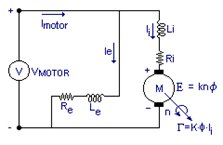

Motores de corriente continua
Un motor de corriente continua es una máquina eléctrica rotativa que transforma energía eléctrica en forma de corriente continua en energía mecánica mediante interacciones electromagnéticas.

Tipos
Existen 4 tipos: Serie, paralelo, compound larga y compound corta.



Aplicaciones
Algunas de sus aplicaciones son la automoción, la industria, etc.
Volver a Corriente continua y Alterna
Volver a eléctricidad (Índice)